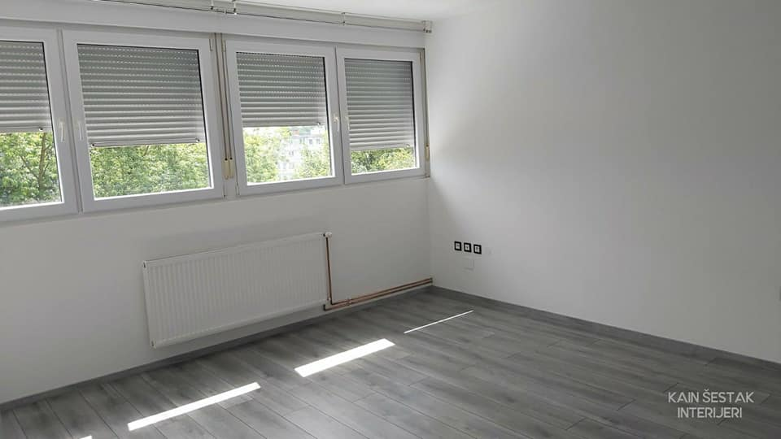
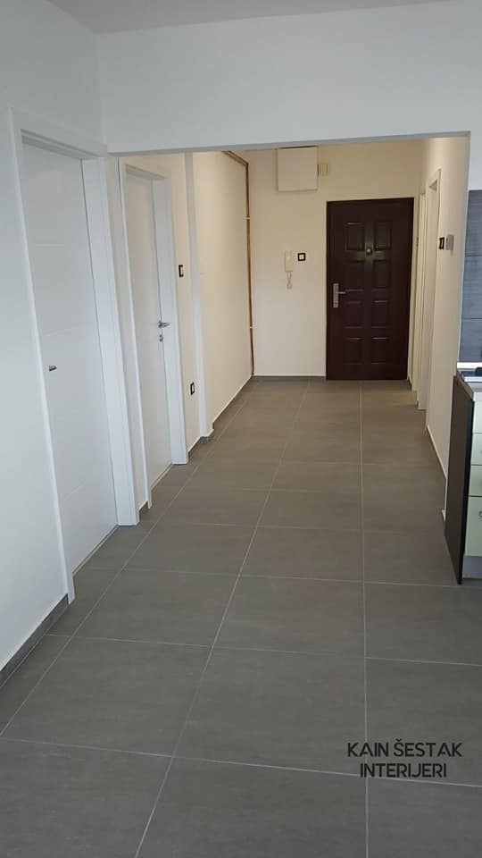
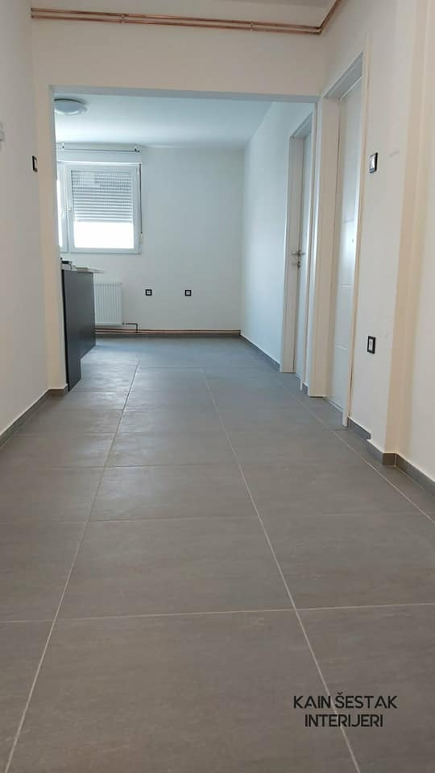

Prije početka radova morate se odlučiti za opseg renoviranja, odnosno u kojoj mjeri želite renovirati stan. Želite li sačuvati postojeće električne i strojne instalacije (ako su novije i kvalitetno su izvedene)? Treba li ih zamijeniti u potpunosti ili samo djelomično? Hoćete li stan samo oličiti i zamijeniti namještaj, dok će razmještaj opreme i prostora ostati isti kao i do sada? Planirate li rušiti bilo koji od nosivih zidova? Mnogo je pitanja, a vaši odgovori ovise o opsegu radova koje trebate za renoviranje i o konačnom trošku renoviranja.

Izgradnja po sistemu „ključ u ruke”
Razni izvođači radova, uključujući arhitekte, nude renovaciju stana po sistemu „ključ u ruke”. U tom slučaju izvođač preuzima odgovornost za cjelokupni projekt i osigurava stručnost i kvalitetu izvedbe, u dogovorenom roku i po ugovorenoj cijeni. Klijent, odnosno investitor je u tom slučaju potpuno rasterećen svih briga i radova i na kraju doslovno dobiva ključ završenog projekta.

